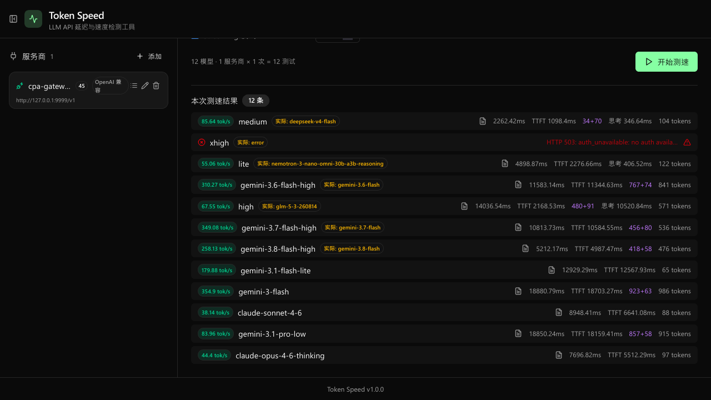
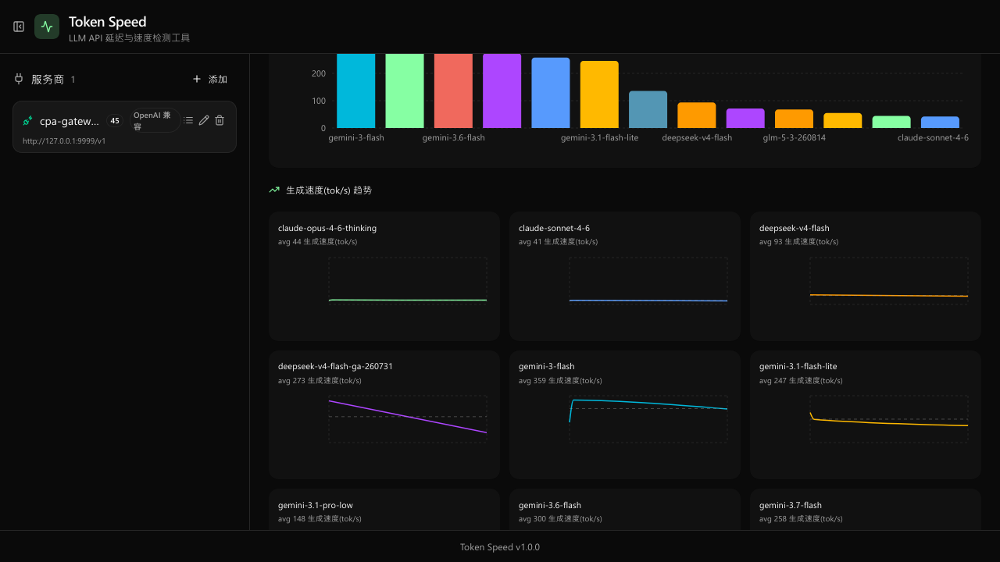
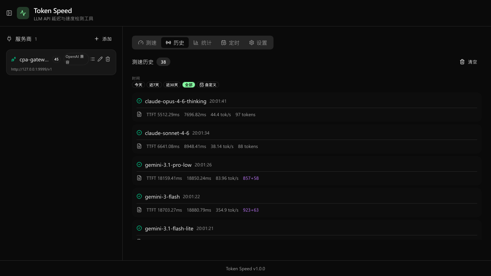
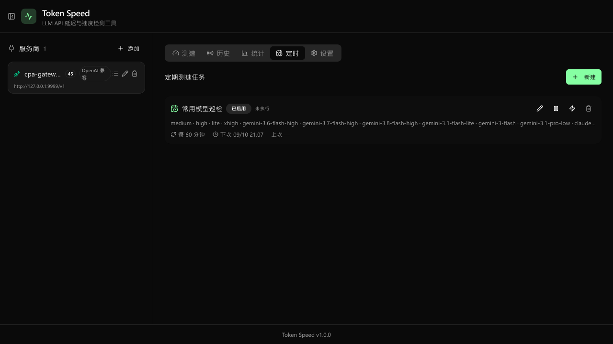

Token Speed 是一个 LLM API 延迟与速度检测工具： 多服务商管理、跨模型批量测速、定时巡检、历史与统计可视化。 支持 OpenAI 兼容与 Anthropic 双协议，测速结果存本地 SQLite。
Windows 免安装：下载 zip 解压双击 TokenSpeed.exe

推理模型先思考再回答，一刀切的"输出速度"没有意义。Token Speed 把每个阶段拆开测量，并自动识别不同网关的 token 统计口径。
从发请求到第一个 token（含思考增量）到达的耗时，体感"多快开始出字"。
回答阶段的净速度：剔除 TTFT 与思考耗时，只算正文 token 的每秒吞吐。
首个思考 token 到首个正文 token 之间的耗时，让"思考很久才开口"可见。
自动识别 completion_tokens 是否包含 reasoning：OpenAI/DeepSeek 与 Gemini 系网关统计口径不同，都能算对。
不只是跑分：批量、并发、限流、定时、历史与成功率，覆盖 LLM 网关日常监控的完整链路。
添加 / 编辑 / 删除服务商，自动检测并缓存模型列表；同一网关多个模型一键全选。
多模型组合、并发与迭代控制，SSE 实时推送逐条进度，随时可中途取消。
每个服务商独立信号量与 RPM 令牌桶限流，压测互不挤占、不触发限速。
按 (provider, model) 对聚合：同一个模型名由不同服务商提供时，分开展示、单独对比。
失败样本按请求模型归组计入成功率，时间与模型筛选联动，网关劣化一眼可见。
按间隔自动执行，运行时可调并发 / 迭代 / RPM；执行进度与上次状态实时可查。
小多图 / 单图切换，TTFT、延迟、TPS、成功率四种指标的时间序列与模型对比。
每次测速保存实际回复正文与错误原文，hover 即看，排查问题不用翻日志。
OpenAI 兼容 /v1/chat/completions 与 Anthropic 原生 /v1/messages，流式 / 非流式均可。
以下截图来自一次真实的 12 模型批量测速：包含思考型模型的 token 拆分、失败样本与统计聚合。



Python 3.10+ 与 Node 18+ 即可。前端构建一次，之后单进程启动。
左侧添加服务商（base URL + API Key，自动拉取模型列表）→ 勾选模型 → 开始测速。
免 Python / Node 环境，数据保存在 %APPDATA%\TokenSpeed，托盘图标可最小化 / 退出。
打开 http://localhost:8000（后端自动挂载前端构建产物）。
添加服务商 → 检测模型 → 勾选 → 开始测速。建议开启 Streaming 模式以获得 TTFT / TPS 指标。